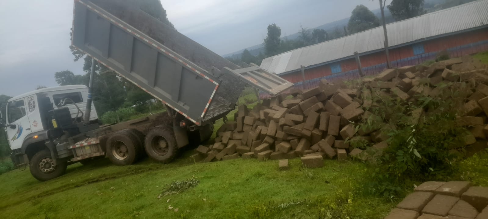

Our Location
Ogiek PEFA Church is located in Kenya, Nakuru County, Kuresoi South Constituency, Tinet Ward.
Serving God • Serving People • Transforming Lives

Welcome to Ogiek PEFA Church, a Christian community committed to worshipping God, preaching the Gospel, building families and transforming lives.
Learn MoreOgiek PEFA Church is located in Kenya, Nakuru County, Kuresoi South Constituency, Tinet Ward.
Senior Pastor
Rev. Joseph Tonui serves as the Senior Pastor of Ogiek PEFA Church, providing spiritual leadership, guidance and pastoral care to the church family.
📞 Phone: 0728 213 923
📧 Email: ogiekpefa@gmail.com
We would love to hear from you. Feel free to contact Ogiek PEFA Church using the details below.
Tinet Ward,
Kuresoi South Constituency,
Nakuru County, Kenya.